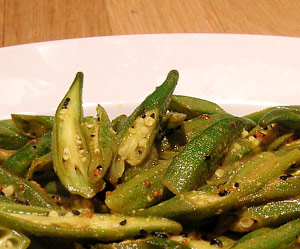

Okragemüse in würziger Senfsauce
4 von 6500 g Okraschoten der länge nach aufschneiden. Tamarindenmark in heissem Wasser 20 min auflösen und danach durch ein Sieb giessen. Öl erhitzen. Zwiebelsamen mit den Okraschoten beigeben. Chilipulver, Kurkuma, Salz und etwas Zucker untermischen. Das Gemüse ca. 10 min garen. 2 EL von der Tamarindenpaste mit EL grobkörnigem Senf dazu, abschmecken und servieren.
